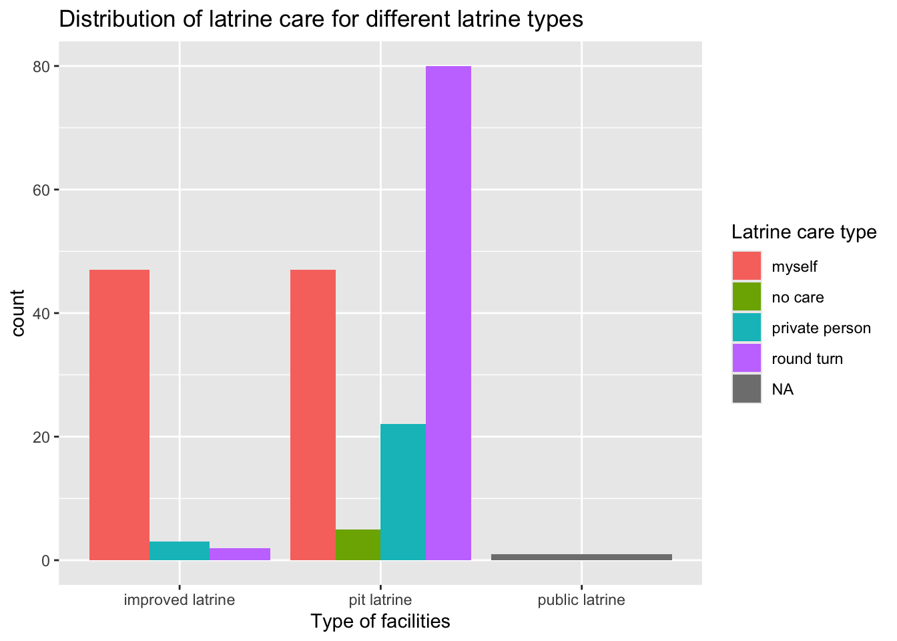

The goal of saniabidjan is to provide survey data about the behavior and practices of managing sanitation facilties in two low-income areas of Abidjan, Cote d’Ivoire.
Installation
You can install the development version of saniabidjan from GitHub with:
# install.packages("devtools")
devtools::install_github("openwashdata/saniabidjan")
## Run the following code in console if you don't have the packages
## install.packages(c("dplyr", "knitr", "readr", "stringr", "gt", "kableExtra"))
library(dplyr)
library(knitr)
library(readr)
library(stringr)
library(gt)
library(kableExtra)Alternatively, you can download the individual datasets as a CSV or XLSX file from the table below.
| dataset | CSV | XLSX |
|---|---|---|
| saniabidjan | Download CSV | Download XLSX |
Data
The package provides access to one dataset saniabidjan. It contains household survey data in two low-income areas of Abidjan. The focus of the survey is to understand the behavior and practices of the population in terms of managing sanitation facilities, as well as to assess the diseases they face.
saniabidjan
The dataset saniabidjan contains data about household surveys that cover 101 households in Abobo and 106 households in Yopougon. It has 207 observations and 25 variables
saniabidjan |>
head(3) |>
gt::gt() |>
gt::as_raw_html()| area_name | sex | education | housing_type | status | lat_facilities | facilities_loc | facilities_type | lat_sharing | nb_user | impacts_of_sharing | lat_care | clean_freq_wk | tank_presence | tank_location | latrines_nb | tk_status | empty_freq_yr | empty_mode | empty_price | wastwat_dispos | waste_cont | waste_cont_loc | cont_empty_wk | common_ill |
|---|---|---|---|---|---|---|---|---|---|---|---|---|---|---|---|---|---|---|---|---|---|---|---|---|
For an overview of the variable names, see the following table.
| variable_name | variable_type | description |
|---|---|---|
| area_name | factor | Identify survey areas, options including (1) Abobo and (2) Yopougon. |
| sex | factor | Indicates respondents gender, options including (1) female and (2) male. |
| education | factor | Level of education of respondents, options including (1) no: the respondent did not go to school, (2) primary: the respondent has an elementary level, (3) coranic: the respondent went to a Quranic school, (4) high school: the respondent has a high school degree, and (5) graduate: the respondent has a university degree. |
| housing_type | factor | Description of the accommodation unit where the respondent lives, options including (1) common courtyard and (2) individual. |
| status | factor | Indicates if respondent is the homeowner or not, options including (1) free host: the respondent is hosted for free, (2) owner: the respondent is the homeowner, and (3) renter: the respondent is the renter. |
| lat_facilities | logical | Does the surveyed household have latrine facilities? |
| facilities_loc | factor | Specifies the exact location of the latrine in the household, options including (1) house, (2) yard, and (3) out of yard. |
| facilities_type | factor | Describes the type of latrine used in the household, options including (1) pit latrine, (2) improved latrine, and (3) public latrine. |
| lat_sharing | logical | Explains how latrines are used in the household |
| nb_user | numeric | Reveals the number of users of the latrines. |
| impacts_of_sharing | factor | Indication of how the respondent perceives the use of latrines, options including (1) hygiene problems, (2) no problems, (3) vulnerable to disease, and (4) waiting line. |
| lat_care | factor | Gives an overview of the people in charge of latrine cleaning, options including (1) myself, (2) no care, and (3) private person, and (4) round turn. |
| clean_freq_wk | numeric | Specifies the cleaning frequency of latrines in the household. |
| tank_presence | logical | Does the surveyed household have septic tank? |
| tank_location | factor | Specifies the exact location of the septic tank in the household, options including (1) court yard, (2) out of court yard, and (3) not know. |
| latrines_nb | numeric | Reveals the number of latrines connecting to the septic tank. |
| tk_status | logical | Expresses septic tank performance status. |
| empty_freq_yr | factor | Indicates the number of times that the septic tank is emptied during the year in the household, options including (1) 1, (2) 2 and (3) 3. |
| empty_mode | factor | Indicates how the septic tank is emptied in the household, options including (1) emptying truck, (2) manual emptying, and (3) truck and manual. |
| empty_price | numeric | Shows the charge/price (in CFA franc) for emptying the septic tank. |
| wastwat_dispos | factor | Show whether the household has wastewater disposal facilities, options including (1) courtyard, (2) open drain, and (3) street. |
| waste_cont | logical | Does the surveyed household have solid waste disposal facilities? |
| waste_cont_loc | factor | Precise location of solid waste disposal equipment, options including (1) courtyard and (2) out of courtyard. |
| cont_empty_wk | numeric | Indicates the emptying frequency of solid waste disposal equipment per week |
| common_ill | factor | Overview of the most common disease in the household associated with sanitation, options including (1) diarrhea, (2) infections, (3) malaria, and (4) typhoid fever. |
Example
library(saniabidjan)
library(ggplot2)
# Provide some example code here
saniabidjan |>
ggplot(mapping = aes(x = facilities_type)) +
geom_bar(aes(fill = lat_care), position = "dodge") +
labs(title = "Distribution of latrine care for different latrine types",
x = "Type of facilities",
fill = "Latrine care type") 
Capstone Project
This dataset is shared as part of a capstone project in Data Science for openwashdata. For more information about the project and to explore further insights, please visit the project page at https://ds4owd-001.github.io/project-coulbyph/
License
Data are available as CC-BY.
Citation
Please cite this package using:
citation("saniabidjan")
#> To cite package 'saniabidjan' in publications use:
#>
#> Zié Zoumana Coulibaly P, Dongo K, Zhong M (2024). _saniabidjan: Data
#> About Behavior and Practices of Managing Sanitation Facilties in
#> Abidjan, Cote d’Ivoire_. R package version 0.0.1,
#> <https://github.com/openwashdata/saniabidjan>.
#>
#> A BibTeX entry for LaTeX users is
#>
#> @Manual{,
#> title = {saniabidjan: Data About Behavior and Practices of Managing Sanitation Facilties in Abidjan, Cote d’Ivoire},
#> author = {Phaniwa {Zié Zoumana Coulibaly} and Kouassi Dongo and Mian Zhong},
#> year = {2024},
#> note = {R package version 0.0.1},
#> url = {https://github.com/openwashdata/saniabidjan},
#> }